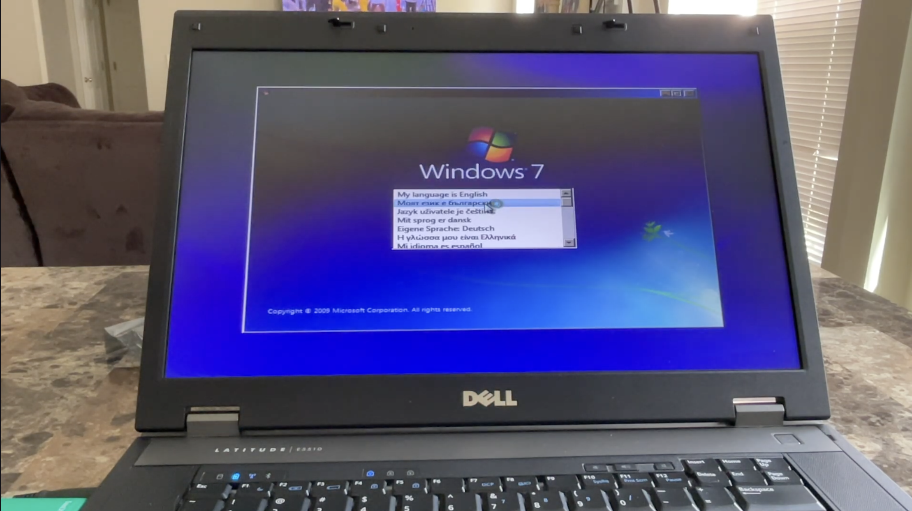

I have been interested in technology ever since I was about 8 years old. My papaw was a technician, who repaired computers in his spare time. He's repaired a couple of my computers in the past, with the most recent being a prebuilt gaming PC by iBUYPOWER that had a defective cooling system.
At the same time, I was watching various videos on YouTube about Windows machines and Apple devices, like the iPad. I got my first iPhone for Christmas 2013, when I was just 7 years old. The phone in particular was an iPhone 5 running iOS 6, which was prepaid through TracFone Wireless/Straight Talk. I also had an iPad 2 that I used for school as well. But watching my papaw fix those machines was what got me fascinated in the repair business.
It wasn't until the fall of 2024 when I did my first official repair on a Dell Latitude E5510 that I purchased on eBay. The laptop had a bad battery and needed a fresh new charger. It also had no OS installed, so I went ahead and loaded it with a fresh installation of Windows 7, the operating system the laptop was shipped with. Ever since then, I've been able to diagnose issues with certain electronics, then help resolve the issue through my repair work. Nowadays, I am still learning how to repair my tech, with two subjects currently in the works. I'm hoping to start learning how to do AIBO repairs soon, as I have an ERS-1000 named Willa who has a dislocation in one of her rear hips. I would also like to foray into doing other models too, such as the ERS-7 and other previous AIBO models.